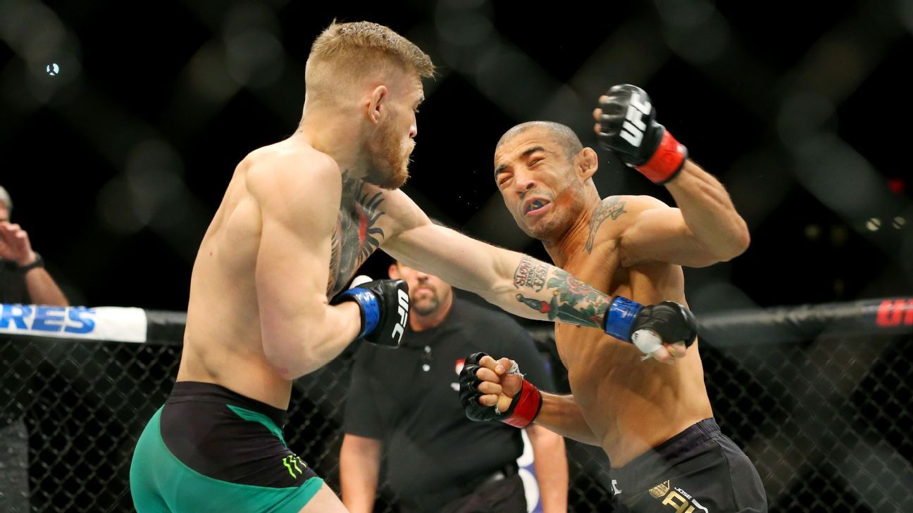

Early Career
On 9 March 2008, McGregor had his first professional MMA bout, as a lightweight, defeating Gary Morris with a second-round TKO. After McGregor won his second fight against Mo Taylor, he made his featherweight debut in a loss via submission against Artemij Sitenkov. After a victory at featherweight in his next bout against Stephen Bailey, McGregor contemplated a different career path before his mother contacted his coach John Kavanagh and reinvigorated him to continue pursuing mixed martial arts.
McGregor then won his next fight, also at featherweight, against Connor Dillon, before moving back to lightweight for a fight against Joseph Duffy, where he received his second professional loss after submitting to an arm-triangle choke. Following this, during 2011 and 2012, McGregor went on an eight-fight winning streak, during which he won both the CWFC Featherweight and Lightweight championships, making him the first European professional mixed martial artist to hold titles in two divisions simultaneously. In February 2013, UFC president Dana White made a trip to Dublin, Ireland to receive a Gold Medal of Honorary Patronage from Trinity College and was inundated with requests to sign McGregor to the UFC. After a meeting with McGregor, and talking with UFC CEO Lorenzo Fertitta, White offered him a contract days later.
